Tutoriales › Cómo dibujar un pato con marcador

Tutorial 02 · Video publicado
Cómo dibujar un pato con marcador
Dibujo paso a paso con 8 bloques de pasos explicados abajo. Mirá el video, descargá las diapositivas en PDF (12 páginas) y practicá a tu ritmo.
Video
Materiales
- Materiales Un marcador grueso para el contorno y uno fino para los detalles. Si tenés uno naranja o amarillo, guardalo para el pico.
- Grueso
- Fino
- Marcador negro grueso para el contorno
- Marcador negro fino para ojo, plumas y agua
- Opcional
- Hoja lisa, mejor gruesa (la fina se traspasa)
- Lápiz y goma para un boceto suave
Paso a paso
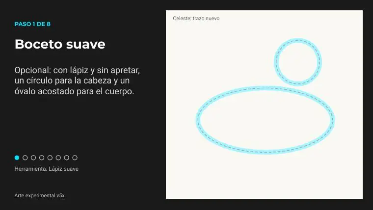
Paso 1 de 8 · Boceto suave
Opcional: con lápiz y sin apretar, un círculo para la cabeza y un óvalo acostado para el cuerpo.
Herramienta: Lápiz suave
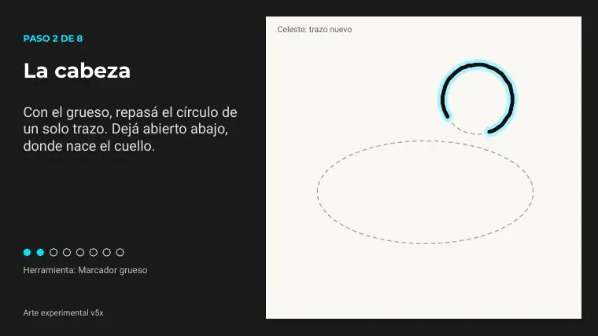
Paso 2 de 8 · La cabeza
Con el grueso, repasá el círculo de un solo trazo. Dejá abierto abajo, donde nace el cuello.
Herramienta: Marcador grueso
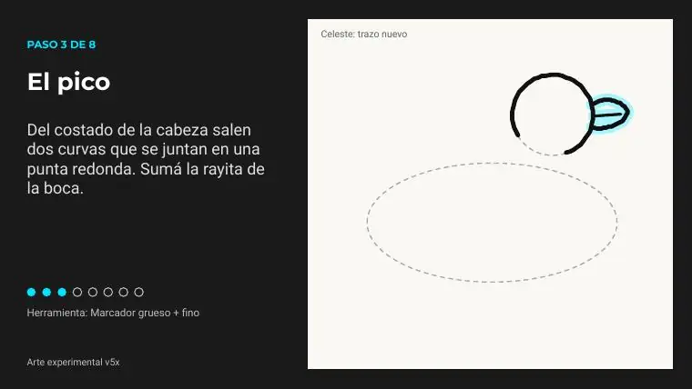
Paso 3 de 8 · El pico
Del costado de la cabeza salen dos curvas que se juntan en una punta redonda. Sumá la rayita de la boca.
Herramienta: Marcador grueso + fino
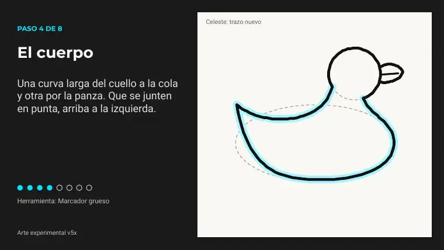
Paso 4 de 8 · El cuerpo
Una curva larga del cuello a la cola y otra por la panza. Que se junten en punta, arriba a la izquierda.
Herramienta: Marcador grueso
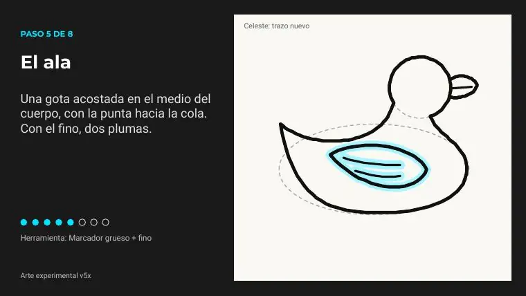
Paso 5 de 8 · El ala
Una gota acostada en el medio del cuerpo, con la punta hacia la cola. Con el fino, dos plumas.
Herramienta: Marcador grueso + fino
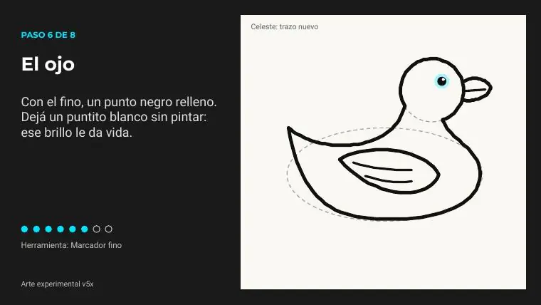
Paso 6 de 8 · El ojo
Con el fino, un punto negro relleno. Dejá un puntito blanco sin pintar: ese brillo le da vida.
Herramienta: Marcador fino
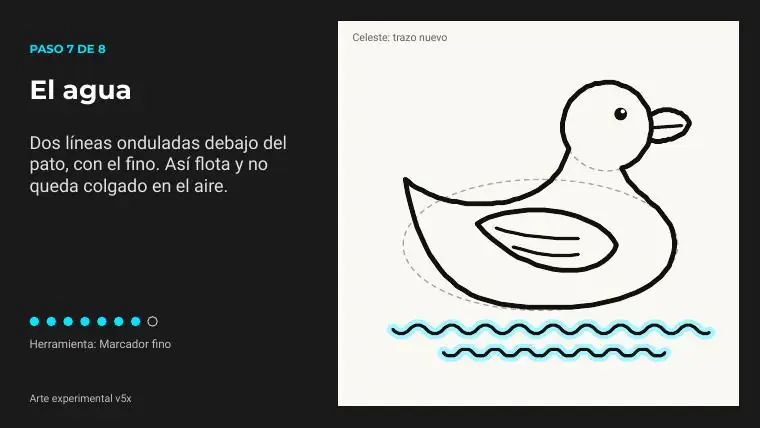
Paso 7 de 8 · El agua
Dos líneas onduladas debajo del pato, con el fino. Así flota y no queda colgado en el aire.
Herramienta: Marcador fino
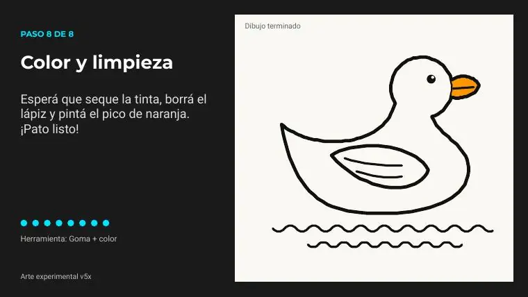
Paso 8 de 8 · Color y limpieza
Esperá que seque la tinta, borrá el lápiz y pintá el pico de naranja. ¡Pato listo!
Herramienta: Goma + color
Consejos
- Bocetá suave con lápiz y repasá solo cuando te guste la forma.
- Antes de borrar el lápiz o pintar, un minuto. Si no, se corre.
- No repases dos veces la misma línea: la tinta se acumula y mancha.
- Poné otra hoja abajo: el marcador puede traspasar el papel.
Todas las diapositivas del tutorial

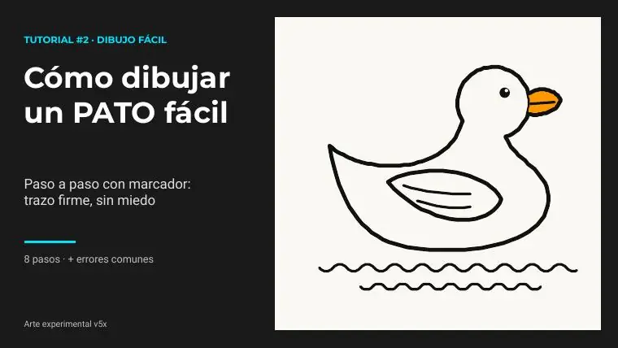

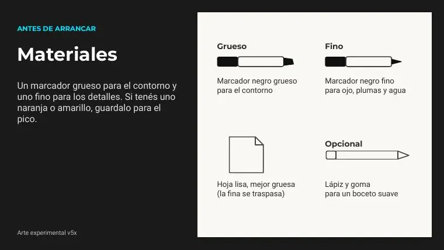


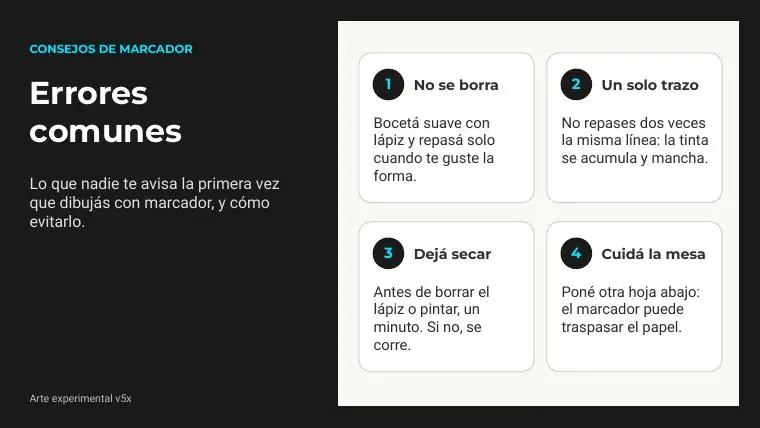

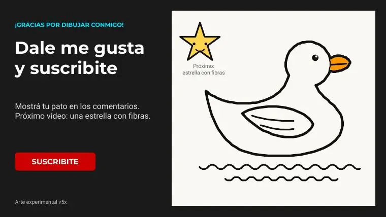
Las imágenes de los pasos son páginas del PDF del tutorial (material propio del canal). Licencia: uso personal libre; no reventa.